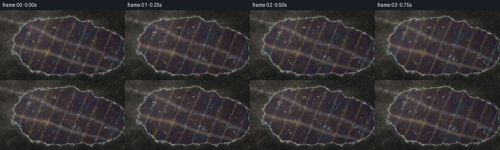
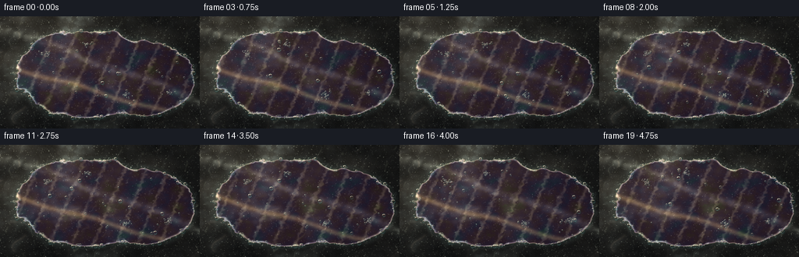
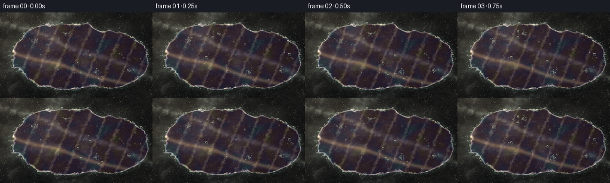
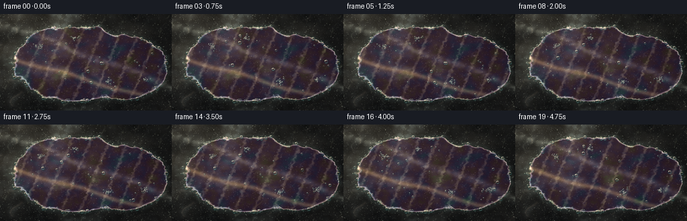
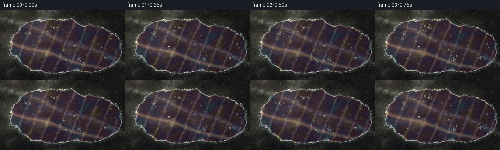
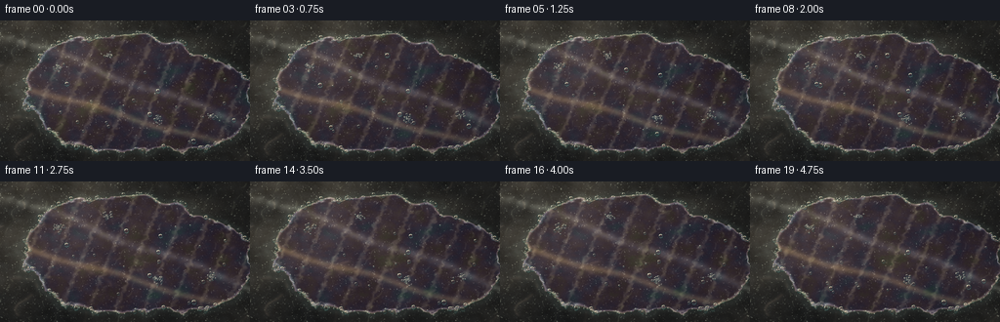
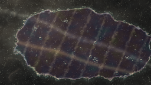

CODING AGENTS AS PIXEL WORLD MODELS
traex/DeepSeek-V4.1-Flash · phygen_085
点击播放 · 原生 RGB 像素
逐轮保存的候选
回放视频、检查图与代码变化。
每份候选均可单独播放。实际图片检查记录在下方工具轨迹中。
候选 01播放与检查图
点击播放 · 原生 RGB 像素


展开代码变化
--- 上一保存版本
+++ 本次保存版本
@@ -0,0 +1,300 @@
+from pathlib import Path
+
+import numpy as np
+from PIL import Image, ImageDraw
+from scipy.ndimage import gaussian_filter
+
+import artifact_io
+
+
+WIDTH = 256
+HEIGHT = 144
+FRAMES = 20
+FPS = 4
+SUPERSAMPLE = 4
+RW = WIDTH * SUPERSAMPLE
+RH = HEIGHT * SUPERSAMPLE
+
+
+def normalize(values):
+ values = values.astype(np.float32, copy=False)
+ low, high = np.percentile(values, [0.5, 99.5])
+ return np.clip((values - low) / max(high - low, 1e-6), 0.0, 1.0)
+
+
+def blurred_noise(seed, sigma):
+ rng = np.random.default_rng(seed)
+ field = rng.normal(size=(RH, RW)).astype(np.float32)
+ return gaussian_filter(field, sigma=sigma, mode="reflect")
+
+
+def smoothstep(edge0, edge1, values):
+ t = np.clip((values - edge0) / (edge1 - edge0), 0.0, 1.0)
+ return t * t * (3.0 - 2.0 * t)
+
+
+def build_fields():
+ large = normalize(blurred_noise(11, (31, 43)))
+ medium = normalize(blurred_noise(23, (8, 10)))
+ small = normalize(blurred_noise(37, 2.2))
+ grain = normalize(blurred_noise(53, 0.75))
+
+ edge_a = normalize(blurred_noise(71, (18, 24))) * 2.0 - 1.0
+ edge_b = normalize(blurred_noise(89, (5, 7))) * 2.0 - 1.0
+ film_a = normalize(blurred_noise(107, (17, 22)))
+ film_b = normalize(blurred_noise(127, (4, 6)))
+ foam_texture = normalize(blurred_noise(149, 1.2))
+ foam_cloud = normalize(blurred_noise(163, (6, 9)))
+ return {
+ "large": large,
+ "medium": medium,
+ "small": small,
+ "grain": grain,
+ "edge_a": edge_a,
+ "edge_b": edge_b,
+ "film_a": film_a,
+ "film_b": film_b,
+ "foam_texture": foam_texture,
+ "foam_cloud": foam_cloud,
+ }
+
+
+def film_distance(x, y, edge_a, edge_b, time):
+ d_left = np.sqrt(((x + 0.02) / 0.72) ** 2 + ((y - 0.015) / 0.42) ** 2)
+ d_right = np.sqrt(((x - 0.43) / 0.47) ** 2 + ((y - 0.08) / 0.35) ** 2)
+ d = np.minimum(d_left, d_right)
+ d += 0.082 * edge_a + 0.019 * edge_b
+ d += 0.016 * np.sin(2 * np.pi * (1.10 * x - 0.72 * y) + 1.3 * edge_b)
+ d += 0.0028 * np.sin(2 * np.pi * time / 5.0 + 2.0 * edge_a)
+ return d
+
+
+def bubble_specs(x, y, distance):
+ rng = np.random.default_rng(20261110)
+ specs = []
+
+ # Lace along the detergent boundary.
+ attempts = 0
+ while len(specs) < 205 and attempts < 100000:
+ attempts += 1
+ cx = rng.uniform(-0.88, 0.88)
+ cy = rng.uniform(-0.50, 0.50)
+ px = int((cx / (16 / 9) + 0.5) * RW)
+ py = int((cy + 0.5) * RH)
+ px = np.clip(px, 0, RW - 1)
+ py = np.clip(py, 0, RH - 1)
+ d = distance[py, px]
+ if abs(d - 1.0) < 0.030:
+ radius = 0.0042 + 0.016 * rng.random() ** 2.4
+ specs.append((cx, cy, radius, rng.uniform(0, 2 * np.pi), 0))
+
+ # A few small foam islands give the boundary an uneven, natural rhythm.
+ islands = [(-0.47, -0.17), (0.23, 0.20), (0.61, 0.18), (-0.12, -0.25)]
+ for island_x, island_y in islands:
+ for _ in range(25):
+ angle = rng.uniform(0, 2 * np.pi)
+ spread = abs(rng.normal(0, 1))
+ cx = island_x + np.cos(angle) * spread * 0.026
+ cy = island_y + np.sin(angle) * spread * 0.017
+ radius = 0.0032 + 0.009 * rng.random() ** 1.8
+ specs.append((cx, cy, radius, rng.uniform(0, 2 * np.pi), 1))
+
+ # A sparse set of larger bubbles sits just inside the soap film.
+ interior = 0
+ attempts = 0
+ while interior < 23 and attempts < 40000:
+ attempts += 1
+ cx = rng.uniform(-0.70, 0.80)
+ cy = rng.uniform(-0.38, 0.38)
+ px = int((cx / (16 / 9) + 0.5) * RW)
+ py = int((cy + 0.5) * RH)
+ px = np.clip(px, 0, RW - 1)
+ py = np.clip(py, 0, RH - 1)
+ if distance[py, px] < 0.82 and distance[py, px] > 0.18:
+ radius = 0.006 + 0.014 * rng.random() ** 1.6
+ specs.append((cx, cy, radius, rng.uniform(0, 2 * np.pi), 2))
+ interior += 1
+
+ specs.sort(key=lambda item: item[2], reverse=True)
+ return specs
+
+
+def draw_bubbles(image, specs, time):
+ overlay = Image.new("RGBA", (RW, RH), (0, 0, 0, 0))
+ draw = ImageDraw.Draw(overlay, "RGBA")
+ for cx, cy, radius, phase, kind in specs:
+ drift = 0.0008 if kind < 2 else 0.0013
+ px = ((cx + drift * np.sin(time * 1.1 + phase)) / (16 / 9) + 0.5) * RW
+ py = ((cy - drift * 0.35 * np.cos(time * 0.8 + phase)) + 0.5) * RH
+ pulse = 1.0 + 0.025 * np.sin(time * 1.6 + phase * 1.7)
+ r = max(1.1, radius * RH * pulse)
+ bbox = (px - r, py - r, px + r, py + r)
+
+ if r < 2.3:
+ draw.ellipse(bbox, fill=(214, 234, 225, 92))
+ continue
+
+ draw.ellipse(
+ (px - r + 1.1, py - r + 1.5, px + r + 1.1, py + r + 1.5),
+ fill=(8, 20, 22, 28),
+ )
+ draw.ellipse(bbox, fill=(104, 158, 154, 15))
+ rim_width = max(1, int(round(r * 0.16)))
+ draw.ellipse(bbox, outline=(29, 70, 72, 132), width=rim_width)
+ inner = (px - r * 0.78, py - r * 0.78, px + r * 0.78, py + r * 0.78)
+ draw.arc(inner, 188, 315, fill=(248, 247, 222, 218), width=max(1, rim_width))
+ draw.arc(inner, 20, 135, fill=(146, 224, 222, 104), width=max(1, rim_width))
+
+ glint = max(0.75, r * 0.17)
+ draw.ellipse(
+ (px - r * 0.49 - glint, py - r * 0.51 - glint,
+ px - r * 0.49 + glint, py - r * 0.51 + glint),
+ fill=(255, 253, 232, 226),
+ )
+
+ if r > 7:
+ draw.arc(
+ (px - r * 0.57, py - r * 0.57, px + r * 0.57, py + r * 0.57),
+ 205,
+ 335,
+ fill=(255, 205, 178, 92),
+ width=max(1, rim_width),
+ )
+
+ base = image.convert("RGBA")
+ base.alpha_composite(overlay)
+ return base.convert("RGB")
+
+
+def render_frame(fields, frame_index):
+ time = frame_index / FPS
+ aspect = 16 / 9
+ x_line = (np.arange(RW, dtype=np.float32) / RW - 0.5) * aspect
+ y_line = np.arange(RH, dtype=np.float32) / RH - 0.5
+ x, y = np.meshgrid(x_line, y_line)
+
+ large = fields["large"]
+ medium = fields["medium"]
+ small = fields["small"]
+ grain = fields["grain"]
+
+ # Polished wet slate: cool graphite with warm mineral inclusions.
+ stone = np.empty((RH, RW, 3), dtype=np.float32)
+ stone[..., 0] = 0.105 + 0.105 * large + 0.045 * medium + 0.018 * small
+ stone[..., 1] = 0.112 + 0.095 * large + 0.050 * medium + 0.020 * small
+ stone[..., 2] = 0.118 + 0.080 * large + 0.055 * medium + 0.023 * small
+
+ vein_wave = np.sin(2 * np.pi * (1.18 * x + 0.47 * y) + 2.1 * large)
+ veins = np.exp(-((vein_wave - 0.08) / 0.095) ** 2)
+ veins *= smoothstep(0.40, 0.88, medium)
+ stone += veins[..., None] * np.array([0.090, 0.075, 0.060], dtype=np.float32)
+
+ flecks = np.clip((grain - 0.82) / 0.18, 0.0, 1.0) ** 2
+ flecks *= smoothstep(0.34, 0.72, small)
+ stone += flecks[..., None] * np.array([0.15, 0.14, 0.115], dtype=np.float32)
+
+ # Low sunlight from the upper left, with cooler shadows at the far edge.
+ sun_pool = np.exp(-(((x + 0.53) / 0.72) ** 2 + ((y + 0.33) / 0.48) ** 2))
+ illumination = 0.68 + 0.47 * sun_pool + 0.08 * np.clip(-x - 0.3 * y, 0, 1)
+ stone *= illumination[..., None]
+ stone += np.array([0.045, 0.032, 0.012], dtype=np.float32) * sun_pool[..., None]
+
+ # Fine wet glints and broad reflected sky bands.
+ glint_noise = normalize(gaussian_filter(
+ fields["grain"] - 0.5, sigma=1.4, mode="reflect"
+ ))
+ glints = np.clip((glint_noise - 0.62) / 0.38, 0.0, 1.0) ** 3
+ stone += glints[..., None] * np.array([0.23, 0.25, 0.23], dtype=np.float32)
+
+ reflection_center = 0.37 * x - 0.08 + 0.018 * np.sin(7.0 * x + 1.7)
+ reflection = np.exp(-((y - reflection_center) / 0.030) ** 2)
+ reflection *= 0.55 + 0.45 * smoothstep(0.22, 0.78, medium)
+ stone += reflection[..., None] * np.array([0.17, 0.18, 0.17], dtype=np.float32)
+
+ caustic_wave = np.sin(2 * np.pi * (2.25 * x + 1.05 * y) + 0.9 * medium)
+ caustic = np.exp(-((caustic_wave - 0.18) / 0.085) ** 2)
+ caustic *= smoothstep(0.40, 0.78, fields["foam_cloud"])
+ stone += caustic[..., None] * np.array([0.075, 0.082, 0.067], dtype=np.float32)
+
+ distance = film_distance(x, y, fields["edge_a"], fields["edge_b"], time)
+ film_mask = 0.5 * (1.0 + np.tanh((1.0 - distance) / 0.012))
+ edge = np.exp(-((distance - 1.0) / 0.023) ** 2)
+
+ # Thin-film thickness varies smoothly; its interference colors are deliberately
+ # desaturated so the result reads as detergent rather than a rainbow overlay.
+ thickness = (
+ 0.54
+ + 0.25 * fields["film_a"]
+ + 0.085 * fields["film_b"]
+ + 0.035 * np.sin(2 * np.pi * (1.35 * x + 0.62 * y) - time * 0.55)
+ + 0.018 * np.sin(2 * np.pi * (3.8 * x - 1.6 * y) + time * 0.28)
+ )
+ thickness *= 0.74 + 0.26 * film_mask
+ phase = 2 * np.pi * (1.65 * thickness)
+ iridescence = 0.5 + 0.5 * np.cos(phase[..., None] + np.array([0.0, 2.1, 4.15]))
+ iridescence = 0.72 * iridescence + 0.28
+
+ film = stone * 0.72
+ film += np.array([0.016, 0.030, 0.036], dtype=np.float32)
+ film += iridescence * (0.080 + 0.105 * edge[..., None])
+ film += edge[..., None] * np.array([0.26, 0.29, 0.27], dtype=np.float32)
+
+ # Long solar streak and fine wavelets on the soap surface.
+ streak_center = 0.29 * x + 0.18 + 0.012 * np.sin(8.0 * x - time * 0.4)
+ solar_streak = np.exp(-((y - streak_center) / 0.025) ** 2)
+ solar_streak *= 0.58 + 0.42 * fields["film_b"]
+ wavelet = np.sin(
+ 2 * np.pi * (5.1 * x + 2.15 * y) + 1.15 * fields["film_b"] - time * 0.85
+ )
+ sparkle = np.clip((wavelet - 0.54) / 0.46, 0.0, 1.0) ** 3
+ sparkle *= 0.30 + 0.70 * fields["foam_cloud"]
+ film += solar_streak[..., None] * np.array([0.20, 0.17, 0.10], dtype=np.float32)
+ film += sparkle[..., None] * np.array([0.14, 0.14, 0.11], dtype=np.float32)
+
+ # Soft scalloped foam is brighter than the bubbles, helping the film edge read.
+ foam_line = edge * smoothstep(0.36, 0.78, fields["foam_cloud"])
+ foam_line *= 0.55 + 0.45 * fields["foam_texture"]
+ film += foam_line[..., None] * np.array([0.30, 0.34, 0.31], dtype=np.float32)
+
+ image = stone * (1.0 - film_mask[..., None]) + film * film_mask[..., None]
+
+ # A faint soap sheen remains just outside the edge as a wet halo.
+ halo = np.exp(-((distance - 1.035) / 0.055) ** 2) * (1.0 - film_mask)
+ image += halo[..., None] * np.array([0.035, 0.050, 0.049], dtype=np.float32)
+
+ image8 = np.clip(image * 255.0, 0, 255).astype(np.uint8)
+ image8 = draw_bubbles(Image.fromarray(image8, "RGB"), bubble_specs(x, y, distance), time)
+ image = np.asarray(image8, dtype=np.float32) / 255.0
+
+ # Gentle highlight bloom, warm grade, and a restrained lens vignette.
+ luminance = np.max(image, axis=2)
+ bloom_source = np.clip((luminance - 0.68) / 0.32, 0.0, 1.0)
+ bloom = gaussian_filter(bloom_source, sigma=8.0, mode="reflect")
+ image += bloom[..., None] * np.array([0.16, 0.13, 0.075], dtype=np.float32)
+
+ image[..., 0] *= 1.035
+ image[..., 1] *= 1.005
+ image[..., 2] *= 0.955
+ vignette = 1.0 - 0.13 * np.clip((x / 0.88) ** 2 + (y / 0.52) ** 2, 0.0, 1.0) ** 1.35
+ image *= vignette[..., None]
+
+ # Film grain is applied after grading to avoid a plastic, synthetic surface.
+ rng = np.random.default_rng(9000 + frame_index)
+ noise = rng.normal(0, 0.006, size=(RH, RW, 1)).astype(np.float32)
+ image += noise
+ image = np.clip(image, 0.0, 1.0)
+
+ downsampled = Image.fromarray((image * 255.0 + 0.5).astype(np.uint8), "RGB").resize(
+ (WIDTH, HEIGHT), Image.Resampling.LANCZOS
+ )
+ return np.asarray(downsampled, dtype=np.uint8)
+
+
+def main():
+ fields = build_fields()
+ frames = np.stack([render_frame(fields, index) for index in range(FRAMES)])
+ artifact_io.save(frames, Path(__file__).resolve().parent)
+
+
+if __name__ == "__main__":
+ main()
候选 02播放与检查图
点击播放 · 原生 RGB 像素


展开代码变化
--- 上一保存版本
+++ 本次保存版本
@@ -60,10 +60,10 @@
def film_distance(x, y, edge_a, edge_b, time):
- d_left = np.sqrt(((x + 0.02) / 0.72) ** 2 + ((y - 0.015) / 0.42) ** 2)
- d_right = np.sqrt(((x - 0.43) / 0.47) ** 2 + ((y - 0.08) / 0.35) ** 2)
+ d_left = np.sqrt(((x + 0.10) / 0.67) ** 2 + ((y - 0.015) / 0.39) ** 2)
+ d_right = np.sqrt(((x - 0.41) / 0.42) ** 2 + ((y - 0.055) / 0.34) ** 2)
d = np.minimum(d_left, d_right)
- d += 0.082 * edge_a + 0.019 * edge_b
+ d += 0.071 * edge_a + 0.016 * edge_b
d += 0.016 * np.sin(2 * np.pi * (1.10 * x - 0.72 * y) + 1.3 * edge_b)
d += 0.0028 * np.sin(2 * np.pi * time / 5.0 + 2.0 * edge_a)
return d
@@ -180,9 +180,9 @@
# Polished wet slate: cool graphite with warm mineral inclusions.
stone = np.empty((RH, RW, 3), dtype=np.float32)
- stone[..., 0] = 0.105 + 0.105 * large + 0.045 * medium + 0.018 * small
- stone[..., 1] = 0.112 + 0.095 * large + 0.050 * medium + 0.020 * small
- stone[..., 2] = 0.118 + 0.080 * large + 0.055 * medium + 0.023 * small
+ stone[..., 0] = 0.074 + 0.105 * large + 0.045 * medium + 0.018 * small
+ stone[..., 1] = 0.083 + 0.095 * large + 0.050 * medium + 0.020 * small
+ stone[..., 2] = 0.091 + 0.080 * large + 0.055 * medium + 0.023 * small
vein_wave = np.sin(2 * np.pi * (1.18 * x + 0.47 * y) + 2.1 * large)
veins = np.exp(-((vein_wave - 0.08) / 0.095) ** 2)
@@ -195,9 +195,9 @@
# Low sunlight from the upper left, with cooler shadows at the far edge.
sun_pool = np.exp(-(((x + 0.53) / 0.72) ** 2 + ((y + 0.33) / 0.48) ** 2))
- illumination = 0.68 + 0.47 * sun_pool + 0.08 * np.clip(-x - 0.3 * y, 0, 1)
+ illumination = 0.57 + 0.57 * sun_pool + 0.08 * np.clip(-x - 0.3 * y, 0, 1)
stone *= illumination[..., None]
- stone += np.array([0.045, 0.032, 0.012], dtype=np.float32) * sun_pool[..., None]
+ stone += np.array([0.055, 0.041, 0.016], dtype=np.float32) * sun_pool[..., None]
# Fine wet glints and broad reflected sky bands.
glint_noise = normalize(gaussian_filter(
@@ -207,9 +207,13 @@
stone += glints[..., None] * np.array([0.23, 0.25, 0.23], dtype=np.float32)
reflection_center = 0.37 * x - 0.08 + 0.018 * np.sin(7.0 * x + 1.7)
- reflection = np.exp(-((y - reflection_center) / 0.030) ** 2)
- reflection *= 0.55 + 0.45 * smoothstep(0.22, 0.78, medium)
- stone += reflection[..., None] * np.array([0.17, 0.18, 0.17], dtype=np.float32)
+ reflection = np.exp(-((y - reflection_center) / 0.036) ** 2)
+ reflection *= 0.42 + 0.58 * smoothstep(0.22, 0.78, medium)
+ stone += reflection[..., None] * np.array([0.22, 0.235, 0.22], dtype=np.float32)
+
+ sky_window = smoothstep(0.30, 0.73, large) * np.exp(-((x + 0.24) / 0.47) ** 2)
+ sky_window *= 0.48 + 0.52 * smoothstep(0.36, 0.80, medium)
+ stone += sky_window[..., None] * np.array([0.115, 0.142, 0.145], dtype=np.float32)
caustic_wave = np.sin(2 * np.pi * (2.25 * x + 1.05 * y) + 0.9 * medium)
caustic = np.exp(-((caustic_wave - 0.18) / 0.085) ** 2)
@@ -217,7 +221,7 @@
stone += caustic[..., None] * np.array([0.075, 0.082, 0.067], dtype=np.float32)
distance = film_distance(x, y, fields["edge_a"], fields["edge_b"], time)
- film_mask = 0.5 * (1.0 + np.tanh((1.0 - distance) / 0.012))
+ film_mask = 0.5 * (1.0 + np.tanh((1.0 - distance) / 0.008))
edge = np.exp(-((distance - 1.0) / 0.023) ** 2)
# Thin-film thickness varies smoothly; its interference colors are deliberately
@@ -234,10 +238,10 @@
iridescence = 0.5 + 0.5 * np.cos(phase[..., None] + np.array([0.0, 2.1, 4.15]))
iridescence = 0.72 * iridescence + 0.28
- film = stone * 0.72
- film += np.array([0.016, 0.030, 0.036], dtype=np.float32)
- film += iridescence * (0.080 + 0.105 * edge[..., None])
- film += edge[..., None] * np.array([0.26, 0.29, 0.27], dtype=np.float32)
+ film = stone * 0.58
+ film += np.array([0.012, 0.026, 0.034], dtype=np.float32)
+ film += iridescence * (0.100 + 0.135 * edge[..., None])
+ film += edge[..., None] * np.array([0.34, 0.38, 0.35], dtype=np.float32)
# Long solar streak and fine wavelets on the soap surface.
streak_center = 0.29 * x + 0.18 + 0.012 * np.sin(8.0 * x - time * 0.4)
@@ -248,13 +252,13 @@
)
sparkle = np.clip((wavelet - 0.54) / 0.46, 0.0, 1.0) ** 3
sparkle *= 0.30 + 0.70 * fields["foam_cloud"]
- film += solar_streak[..., None] * np.array([0.20, 0.17, 0.10], dtype=np.float32)
- film += sparkle[..., None] * np.array([0.14, 0.14, 0.11], dtype=np.float32)
+ film += solar_streak[..., None] * np.array([0.27, 0.225, 0.125], dtype=np.float32)
+ film += sparkle[..., None] * np.array([0.18, 0.18, 0.14], dtype=np.float32)
# Soft scalloped foam is brighter than the bubbles, helping the film edge read.
foam_line = edge * smoothstep(0.36, 0.78, fields["foam_cloud"])
foam_line *= 0.55 + 0.45 * fields["foam_texture"]
- film += foam_line[..., None] * np.array([0.30, 0.34, 0.31], dtype=np.float32)
+ film += foam_line[..., None] * np.array([0.38, 0.43, 0.39], dtype=np.float32)
image = stone * (1.0 - film_mask[..., None]) + film * film_mask[..., None]
@@ -263,7 +267,7 @@
image += halo[..., None] * np.array([0.035, 0.050, 0.049], dtype=np.float32)
image8 = np.clip(image * 255.0, 0, 255).astype(np.uint8)
- image8 = draw_bubbles(Image.fromarray(image8, "RGB"), bubble_specs(x, y, distance), time)
+ image8 = draw_bubbles(Image.fromarray(image8), bubble_specs(x, y, distance), time)
image = np.asarray(image8, dtype=np.float32) / 255.0
# Gentle highlight bloom, warm grade, and a restrained lens vignette.
@@ -284,7 +288,7 @@
image += noise
image = np.clip(image, 0.0, 1.0)
- downsampled = Image.fromarray((image * 255.0 + 0.5).astype(np.uint8), "RGB").resize(
+ downsampled = Image.fromarray((image * 255.0 + 0.5).astype(np.uint8)).resize(
(WIDTH, HEIGHT), Image.Resampling.LANCZOS
)
return np.asarray(downsampled, dtype=np.uint8)
候选 03播放与检查图
点击播放 · 原生 RGB 像素


展开代码变化
--- 上一保存版本
+++ 本次保存版本
@@ -123,33 +123,33 @@
overlay = Image.new("RGBA", (RW, RH), (0, 0, 0, 0))
draw = ImageDraw.Draw(overlay, "RGBA")
for cx, cy, radius, phase, kind in specs:
- drift = 0.0008 if kind < 2 else 0.0013
+ drift = 0.0010 if kind < 2 else 0.0015
px = ((cx + drift * np.sin(time * 1.1 + phase)) / (16 / 9) + 0.5) * RW
py = ((cy - drift * 0.35 * np.cos(time * 0.8 + phase)) + 0.5) * RH
- pulse = 1.0 + 0.025 * np.sin(time * 1.6 + phase * 1.7)
- r = max(1.1, radius * RH * pulse)
+ pulse = 1.0 + 0.045 * np.sin(time * 1.6 + phase * 1.7)
+ r = max(1.2, radius * RH * pulse)
bbox = (px - r, py - r, px + r, py + r)
if r < 2.3:
- draw.ellipse(bbox, fill=(214, 234, 225, 92))
+ draw.ellipse(bbox, fill=(220, 237, 226, 122))
continue
draw.ellipse(
(px - r + 1.1, py - r + 1.5, px + r + 1.1, py + r + 1.5),
- fill=(8, 20, 22, 28),
+ fill=(7, 18, 20, 42),
)
- draw.ellipse(bbox, fill=(104, 158, 154, 15))
+ draw.ellipse(bbox, fill=(105, 162, 156, 22))
rim_width = max(1, int(round(r * 0.16)))
- draw.ellipse(bbox, outline=(29, 70, 72, 132), width=rim_width)
+ draw.ellipse(bbox, outline=(20, 61, 64, 170), width=rim_width)
inner = (px - r * 0.78, py - r * 0.78, px + r * 0.78, py + r * 0.78)
- draw.arc(inner, 188, 315, fill=(248, 247, 222, 218), width=max(1, rim_width))
- draw.arc(inner, 20, 135, fill=(146, 224, 222, 104), width=max(1, rim_width))
+ draw.arc(inner, 188, 315, fill=(255, 250, 226, 238), width=max(1, rim_width))
+ draw.arc(inner, 20, 135, fill=(154, 232, 228, 128), width=max(1, rim_width))
glint = max(0.75, r * 0.17)
draw.ellipse(
(px - r * 0.49 - glint, py - r * 0.51 - glint,
px - r * 0.49 + glint, py - r * 0.51 + glint),
- fill=(255, 253, 232, 226),
+ fill=(255, 253, 234, 242),
)
if r > 7:
@@ -240,7 +240,7 @@
film = stone * 0.58
film += np.array([0.012, 0.026, 0.034], dtype=np.float32)
- film += iridescence * (0.100 + 0.135 * edge[..., None])
+ film += iridescence * (0.115 + 0.155 * edge[..., None])
film += edge[..., None] * np.array([0.34, 0.38, 0.35], dtype=np.float32)
# Long solar streak and fine wavelets on the soap surface.
@@ -274,7 +274,7 @@
luminance = np.max(image, axis=2)
bloom_source = np.clip((luminance - 0.68) / 0.32, 0.0, 1.0)
bloom = gaussian_filter(bloom_source, sigma=8.0, mode="reflect")
- image += bloom[..., None] * np.array([0.16, 0.13, 0.075], dtype=np.float32)
+ image += bloom[..., None] * np.array([0.18, 0.145, 0.078], dtype=np.float32)
image[..., 0] *= 1.035
image[..., 1] *= 1.005
可观测工具轨迹
实际执行的命令与返回图片。
命令 1exit 0
/bin/bash -c "pwd && rg --files -g 'prompt.txt' -g 'GENERATION_RULES.md' -g 'task_spec.json' -g '"'!node_modules'"' -g '"'!vendor'"'"
命令 2exit 0
/bin/bash -c "find . -maxdepth 2 -type f -printf '%p\\n' | sort | head -200"
命令 3exit 0
/bin/bash -c 'git status --short --branch'
命令 4exit 0
/bin/bash -c 'cat prompt.txt'
命令 5exit 0
/bin/bash -c 'cat GENERATION_RULES.md'
命令 6exit 0
/bin/bash -c 'cat task_spec.json'
命令 7exit 0
/bin/bash -c "sed -n '1,240p' artifact_io.py && printf '\\n---PLAYER---\\n' && sed -n '1,220p' player_template.html"
命令 8exit 0
/bin/bash -c "python - <<'PY'
import importlib.util
for name in ['numpy','PIL','scipy','cv2','imageio','ffmpeg']:
print(name, bool(importlib.util.find_spec(name)))
PY"命令 9exit 127
/bin/bash -c "/usr/bin/time -f 'elapsed=%E maxrss=%MKB' python generate.py"
命令 10exit 0
/bin/bash -c 'time python generate.py'
命令 11exit 0
/bin/bash -c 'mkdir -p revisions/candidate_01 && cp inspection.png transition_check.png pixels.npz index.html revisions/candidate_01/ && cp -r frames revisions/candidate_01/frames'
命令 12exit 0
/bin/bash -c 'time python generate.py'
命令 13exit 0
/bin/bash -c 'mkdir -p revisions/candidate_02 && cp inspection.png transition_check.png pixels.npz index.html revisions/candidate_02/ && cp -r frames revisions/candidate_02/frames'
命令 14exit 0
/bin/bash -c 'python generate.py'
命令 15exit 0
/bin/bash -c "python - <<'PY'
from pathlib import Path
import json, numpy as np
from PIL import Image
spec=json.loads(Path('task_spec.json').read_text())
files=sorted(Path('frames').glob('*.png'))
frames=np.stack([np.asarray(Image.open(p)) for p in files])
print('frames', len(files), 'shape', frames.shape, 'dtype', frames.dtype)
print('npz', np.load('pixels.npz')['pixels'].shape)
print('luma min/mean/max', *(round(float(x),2) for x in (frames.mean(2).min(), frames.mean(2).mean(), frames.mean(2).max())))
print('frame diff mean', round(float(np.abs(np.diff(frames.astype(float),axis=0)).mean()),3))
print('artifact bytes', {p.name:p.stat().st_size for p in [Path('index.html'),Path('pixels.npz'),Path('inspection.png')]})
print('spec', spec)
PY"命令 16exit 0
/bin/bash -c "python -m py_compile generate.py artifact_io.py && printf 'compile: ok\\n' && git status --short -- generate.py revisions | head -20"
命令 17exit 0
/bin/bash -c "find . -maxdepth 2 -type f -printf '%p %s bytes\\n' | sort | head -80"
视觉工具实际返回图片 1

视觉工具实际返回图片 2

视觉工具实际返回图片 3

视觉工具实际返回图片 4

保存候选 3 份；完成命令 17 次；可验证图片返回 4 张。原始 API 响应与完整日志保留在本地。